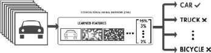
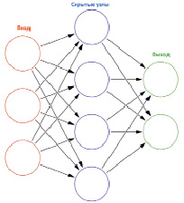

Роль нейронных сетей в современных технологиях
В последнее время все больше и больше людей говорят о так называемых нейронных сетях, которые в скором времени, по оценкам и прогнозам профессионалов, будут уверенно применяться в робототехнике, в машиностроении и в других совершенно разных сферах человеческой деятельности. Что это за нейронные сети, как они работают, как они используются и как они могут стать полезными для нас?
Нейронные сети являются одним из направлений научных исследований в области создания искусственного интеллекта (ИИ), в основе которого лежит стремление подражать нервной системе человека. Нейронные сети основаны на примитивной биологической модели нервной системы.
Искусственные нейроны – это элементарные взаимосвязанные единицы. Искусственный нейрон – это тот же биологический нейрон, но только значительно упрощенный. Если биологический нейрон представляет собой чрезвычайно сложную систему, которая, помимо своего основного назначения (обработка информации), также выполняет задачи, связанные с его жизнеобеспечением, то в искусственном нейроне для ее выполнения используется только алгоритм биологического нейрона. В планах – самостоятельное изучение компьютеров и их систем. Синапс – это соединение между нейронами, которое используется для отправки и получения информации между ними. Сигнал – актуальная информация для передачи.
В будущем разработка таких нейробиологических моделей может привести к созданию действительно мыслящих компьютеров. Между тем «простые» нейронные сети, уже построенные системой ST Neural Networks, являются мощными инструментами в арсенале специалиста, например, в прикладной статистике.
Цель исследования: рассказать о развитии нейронных сетей, выявить основные особенности в работе и структуре нейронных сетей, выявить популярные области их использования.
Материалы и методы исследования
Исследование области искусственных нейронных сетей проводилось на основе анализа информации, доступной пользователям Всемирной паутины.
Результаты исследования и их обсуждение
История развития нейронных сетей в науке и технике восходит к появлению первых компьютеров или компьютеров. Итак, еще в 1943 г. Маккала и Питтс создали упрощенную модель нервной клетки – искусственного нейрона. Кроме того, они предложили построить сеть из этих элементов для выполнения логических операций. Но самое главное, ученые доказали, что такая сеть способна к обучению. В конце 1940-х гг. Дональд Хебб разработал механизм нейронной сети, который заложил правила компьютерного обучения.
Дальнейшая хронология событий была следующей. В 1954 г. произошло первое практическое использование нейронных сетей в работе компьютеров. В 1958 г. Фрэнк Розенблат разработал алгоритм распознавания образов и математическую аннотацию к нему. В 1960-х гг., после публикации работы по машинному обучению в Минске и Паперте, интерес к развитию нейронных сетей немного угас. Они обнаружили основные вычислительные проблемы, связанные с компьютерной реализацией искусственных нейронных сетей. Одной из важных проблем была слабая мощь компьютеров того времени, которая не позволяла эффективно обрабатывать огромное количество вычислений, необходимых для больших нейронных сетей. Интерес к нейронным сетям возродился еще в 1980-х гг., когда компьютеры достигли высокой вычислительной мощности. Именно в этот период появляется система с механизмом обратной связи, разрабатываются алгоритмы самообучения.
К 2000 г. мощь компьютеров выросла настолько, что они смогли воплотить в жизнь самые смелые мечты ученых прошлого. На данный момент существуют программы для распознавания голоса, компьютерного зрения и многое другое.
Принцип нейронной сети
Одной из причин популярности нейронных сетей является их замечательная способность учиться на наблюдаемых примерах и делать приемлемые выводы на основе неполной, зашумленной и неточной входной информации. Решение, основанное на нейронных сетях, может выглядеть и вести себя как обычное программное обеспечение, но отличие состоит в том, что реализация, основанная на нейронных сетях, скорее «обучается», чем программируется: сама сеть учится выполнять задачу, а не программируется напрямую. Рассмотрим особенности их работы.
В искусственных сетях используются искусственные нейроны, которые являются компьютерными процессорами. То есть искусственная нейронная сеть представляет собой множество взаимосвязанных процессоров, которые выполняют несколько процессов одновременно.
Нейронные сети – это инструменты машинного обучения, в которых компьютер учится выполнять определенную задачу, анализируя примеры обучения. Как правило, эти примеры предварительно помечаются вручную.
Например, в системе распознавания объектов можно сохранить тысячи помеченных изображений домов, автомобилей, стульев и т.д. И она сможет найти визуальные закономерности и особенности этих изображений, чтобы в дальнейшем связать их с конкретными метками (рис. 1).
Проще говоря, дети так же учатся – например, детям показывают разные красные объекты, чтобы позже они могли независимо ассоциировать этот «тег» со всеми красными объектами. Однако для разработки хотя бы отдаленного технического аналога связей нашего мозга требуется создание сложного механизма.
Рис. 1. Пример сетевого обучения
Все нейронные сети состоят из тысяч или миллионов простых, но тесно взаимосвязанных узлов обработки информации, обычно организованных по слоям. Это похоже на нейроны и синапсы в мозге. Мы индуцируем узел с помощью исходных данных, а этот узел, в свою очередь, индуцирует узлы, связанные с ним. Различные типы сетей различаются в зависимости от количества слоев, количества соединений между узлами и количества узлов в каждом из уровней.
Задача первого «входного» слоя состоит в обработке нашей информации. Задача «скрытого» слоя, которого может быть достаточно большое количество, выполнить задачу, для которой мы строим нейронную сеть, – заняться анализом. И задача «выходного» слоя – представить информацию в окончательном виде. Каждый узел – это искусственный нейрон. Важны только входные и выходные узлы, поэтому они предполагают, что узлы в середине скрыты, хотя они выполняют большую часть работы.
Рис. 2. Схема устройства простой сети
Большинство современных нейронных сетей (рис. 2) организованы в слои узлов, в которых данные перемещаются только в одном направлении. Один узел может быть подключен к нескольким узлам на нижележащем уровне, с которого он получает данные, и к нескольким узлам на уровне над ним, на который он отправляет данные.
Каждому из его узлов входящих соединений присваивается номер, известный как «вес». В активной сети узел получает от каждого входящего соединения другой элемент данных, другое число, символизирующее электрический сигнал, и умножает его на уже указанный вес, а затем складывает эти значения, полученные из всех входов, вместе, получая одно число, Если число превышает пороговое значение, определенное функцией активации, которая принимает это число в качестве аргумента, узел «работает», что в современных нейронных сетях обычно означает отправку числа – суммы взвешенных входных данных – по всем исходящим от него соединениям.
В режиме обучения для всех весов и порогов нейронной сети первоначально устанавливаются случайные значения. Учебные данные поступают на нижний уровень – входной слой – и проходят через последующие слои, умножаются и складываются, пока не достигнут выходного уровня. Во время обучения шкалы и пороги постоянно корректируются до тех пор, пока данные тренировки с одинаковыми метками не получат аналогичные результаты.
Возможность обобщения является основным критерием при выборе оптимальной сетевой архитектуры. Сеть, обученная на подмножестве обучающих выборок, генерирует ожидаемые результаты, когда на ее вход отправляются данные, принадлежащие к тому же набору, но не участвующие непосредственно в процессе обучения. Выбор оптимальной структуры сети сводится к уменьшению количества скрытых нейронов и межнейронных соединений, то есть к уменьшению сети с использованием различных методов или к построению сети.
И так, в общем, для различных задач используются определенные типы и типы нейронных сетей, среди которых можно выделить:
– сверточные нейронные сети,
– текущие нейронные сети,
– нейронная сеть Хопфилда.
Далее мы рассмотрим их более подробно.
Сверточные нейронные сети
Сверточные сети являются одним из самых популярных типов искусственных нейронных сетей. Таким образом, они оказались эффективными в распознавании визуальных изображений (видео и изображений), рекомендательных систем и языковой обработки.
Сверточные нейронные сети хорошо масштабируются и могут использоваться для распознавания образов любого разрешения. Эти сети используют объемные трехмерные нейроны. Внутри одного слоя нейроны связаны только небольшим полем, называемым рецептивным слоем.